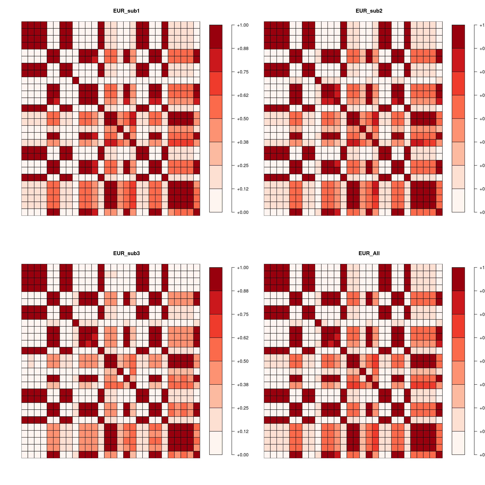

Last updated: 2021-07-07
Checks: 7 0
Knit directory: LD_Analysis/
This reproducible R Markdown analysis was created with workflowr (version 1.6.2). The Checks tab describes the reproducibility checks that were applied when the results were created. The Past versions tab lists the development history.
Great! Since the R Markdown file has been committed to the Git repository, you know the exact version of the code that produced these results.
Great job! The global environment was empty. Objects defined in the global environment can affect the analysis in your R Markdown file in unknown ways. For reproduciblity it’s best to always run the code in an empty environment.
The command set.seed(20210705) was run prior to running the code in the R Markdown file. Setting a seed ensures that any results that rely on randomness, e.g. subsampling or permutations, are reproducible.
Great job! Recording the operating system, R version, and package versions is critical for reproducibility.
Nice! There were no cached chunks for this analysis, so you can be confident that you successfully produced the results during this run.
Great job! Using relative paths to the files within your workflowr project makes it easier to run your code on other machines.
Great! You are using Git for version control. Tracking code development and connecting the code version to the results is critical for reproducibility.
The results in this page were generated with repository version 822ad33. See the Past versions tab to see a history of the changes made to the R Markdown and HTML files.
Note that you need to be careful to ensure that all relevant files for the analysis have been committed to Git prior to generating the results (you can use wflow_publish or wflow_git_commit). workflowr only checks the R Markdown file, but you know if there are other scripts or data files that it depends on. Below is the status of the Git repository when the results were generated:
Ignored files:
Ignored: .ipynb_checkpoints/
Ignored: data/.ipynb_checkpoints/
Untracked files:
Untracked: analysis/.Rmd
Untracked: analysis/.ipynb_checkpoints/
Untracked: data/EUR_subpop1.txt
Untracked: data/EUR_subpop2.txt
Untracked: data/EUR_subpop3.txt
Untracked: data/chr10_18681005_18770105_EUR/
Untracked: data/chr15_91416560_91429040_EUR/
Untracked: data/chr8_4177794_4192544_EUR/
Unstaged changes:
Deleted: analysis/first-analysis.Rmd
Note that any generated files, e.g. HTML, png, CSS, etc., are not included in this status report because it is ok for generated content to have uncommitted changes.
These are the previous versions of the repository in which changes were made to the R Markdown (analysis/ld_analysis.Rmd) and HTML (docs/ld_analysis.html) files. If you’ve configured a remote Git repository (see ?wflow_git_remote), click on the hyperlinks in the table below to view the files as they were in that past version.
| File | Version | Author | Date | Message |
|---|---|---|---|---|
| Rmd | 822ad33 | sq-96 | 2021-07-07 | Publish the initial files for myproject |
| html | 42306c5 | sq-96 | 2021-07-07 | Build site. |
| Rmd | 3ffae79 | sq-96 | 2021-07-07 | Publish the initial files for myproject |
| html | d0e6281 | sq-96 | 2021-07-07 | Build site. |
| Rmd | f7c4b47 | sq-96 | 2021-07-07 | Publish the initial files for myproject |
| html | 1569358 | sq-96 | 2021-07-05 | Build site. |
| Rmd | 64f9844 | sq-96 | 2021-07-05 | Publish the initial files for myproject |
| html | d4588ec | sq-96 | 2021-07-05 | Build site. |
| Rmd | cdf47fa | sq-96 | 2021-07-05 | Publish the initial files for myproject |
| html | 9745cc6 | sq-96 | 2021-07-05 | Build site. |
| Rmd | 859c344 | sq-96 | 2021-07-05 | Publish the initial files for myproject |
| html | b5b98f1 | sq-96 | 2021-07-05 | Build site. |
| Rmd | 24a94c7 | sq-96 | 2021-07-05 | Publish the initial files for myproject |
| html | 2fd6c2f | sq-96 | 2021-07-05 | Build site. |
| Rmd | 6272671 | sq-96 | 2021-07-05 | Publish the initial files for myproject |
| html | 457808c | sq-96 | 2021-07-05 | Build site. |
| Rmd | 82cfe8c | sq-96 | 2021-07-05 | Publish the initial files for myproject |
| html | a7420d8 | sq-96 | 2021-07-05 | Build site. |
| Rmd | d817a3f | sq-96 | 2021-07-05 | Publish the initial files for myproject |
| html | e77076d | sq-96 | 2021-07-05 | Build site. |
| Rmd | 8de5405 | sq-96 | 2021-07-05 | Publish the initial files for myproject |
| html | 18a0f2f | sq-96 | 2021-07-05 | Build site. |
| Rmd | 643b482 | sq-96 | 2021-07-05 | Publish the initial files for myproject |
| html | db2ad35 | sq-96 | 2021-07-05 | Build site. |
| html | f0c6cb5 | sq-96 | 2021-07-05 | Build site. |
| html | 76ce23b | sq-96 | 2021-07-05 | Build site. |
| Rmd | fd1293a | sq-96 | 2021-07-05 | Publish the initial files for myproject |
| html | d5bf4c4 | sq-96 | 2021-07-05 | Build site. |
| Rmd | f66f509 | sq-96 | 2021-07-05 | Publish the initial files for myproject |
| html | b538793 | sq-96 | 2021-07-05 | Build site. |
| Rmd | ec874a3 | sq-96 | 2021-07-05 | Publish the initial files for myproject |
| html | a5a1ae8 | sq-96 | 2021-07-05 | Build site. |
| html | ee7390b | sq-96 | 2021-07-05 | Build site. |
| html | 81812fd | sq-96 | 2021-07-05 | Build site. |
| Rmd | 3e38b1c | sq-96 | 2021-07-05 | Publish the initial files for myproject |
Comparing eigenvalues and eigenvectors of LD matrices calcualted with different subsamples.
Data is from 1000 Genome EUR ancestry (~500 individuals). Samples are randomly splitted into 3 subsets, each has 160 individuals. Using PLINL to alculate LD matrices with variants (MAF > 0.05) in three SCZ loci.
[,1] [,2] [,3] [,4] [,5] [,6] [,7] [,8] [,9] [,10]
EUR_sub1 12.358 9.500 3.138 0.987 0.879 0.344 0.229 0.136 0.133 0.088
EUR_sub2 12.630 9.654 3.083 0.982 0.828 0.325 0.177 0.106 0.097 0.029
EUR_sub3 11.828 9.181 3.653 1.155 0.958 0.361 0.212 0.175 0.154 0.134
EUR_All 12.232 9.470 3.301 0.978 0.945 0.350 0.176 0.127 0.101 0.086 [,1] [,2] [,3] [,4] [,5] [,6] [,7] [,8] [,9] [,10]
sub1.vs.sub2 0.994 0.999 0.997 -0.953 0.948 0.972 -0.717 -0.030 -0.025 0.030
sub1.vs.sub3 0.938 0.998 0.994 -0.205 -0.246 -0.908 -0.270 0.334 0.241 0.148
sub2.vs.sub3 0.931 0.999 0.997 -0.091 0.059 -0.929 0.124 -0.512 -0.699 0.129
sub1.vs.All 0.994 0.999 0.998 -0.995 -0.993 -0.975 0.912 0.135 -0.218 0.055
sub2.vs.All 0.994 1.000 0.999 0.976 -0.960 -0.984 -0.922 0.891 -0.884 0.047
sub3.vs.All 0.964 0.999 0.998 0.121 0.162 0.974 -0.258 -0.295 0.775 0.200 [,1] [,2] [,3] [,4] [,5] [,6] [,7] [,8] [,9] [,10]
EUR_sub1 29.065 18.070 10.046 9.695 8.266 3.396 2.458 1.798 1.714 1.609
EUR_sub2 31.328 18.959 9.930 8.578 7.777 2.856 2.765 1.860 1.630 1.561
EUR_sub3 32.999 17.835 10.803 9.199 7.103 2.979 2.291 1.768 1.573 1.536
EUR_All 31.035 18.421 9.739 9.504 7.758 3.028 2.508 1.734 1.673 1.487 [,1] [,2] [,3] [,4] [,5] [,6] [,7] [,8] [,9] [,10]
sub1.vs.sub2 0.956 0.995 -0.623 0.571 0.941 -0.087 0.084 0.150 -0.382 0.181
sub1.vs.sub3 0.953 0.992 -0.717 0.776 0.854 0.972 0.947 -0.886 0.049 0.412
sub2.vs.sub3 0.956 0.993 0.061 0.152 0.797 -0.083 0.109 -0.199 0.277 -0.218
sub1.vs.All 0.977 0.999 0.961 0.991 0.954 0.994 0.983 -0.961 -0.805 0.342
sub2.vs.All 0.987 0.997 -0.652 0.622 0.911 -0.092 0.092 -0.332 -0.018 0.389
sub3.vs.All 0.988 0.997 -0.784 0.793 0.967 0.988 0.942 0.884 -0.203 -0.216 [,1] [,2] [,3] [,4] [,5] [,6] [,7] [,8] [,9] [,10]
EUR_sub1 64.567 41.246 27.939 22.025 16.730 12.993 10.882 8.684 8.098 5.896
EUR_sub2 58.766 44.374 28.344 19.114 17.447 15.394 10.693 9.354 8.029 6.484
EUR_sub3 63.827 44.576 28.343 23.739 16.849 15.974 9.240 8.869 8.085 5.096
EUR_All 61.384 42.751 28.386 21.892 16.766 15.061 10.140 9.074 8.152 5.691 [,1] [,2] [,3] [,4] [,5] [,6] [,7] [,8] [,9] [,10]
sub1.vs.sub2 0.974 0.931 -0.969 -0.954 -0.966 -0.948 0.932 0.950 0.920 -0.830
sub1.vs.sub3 0.983 0.979 0.982 0.975 0.904 0.946 -0.882 0.809 0.752 0.584
sub2.vs.sub3 0.978 0.965 -0.959 -0.937 -0.849 -0.876 -0.802 0.765 0.771 -0.650
sub1.vs.All 0.995 0.982 0.992 -0.989 0.990 0.989 0.976 0.988 0.976 0.941
sub2.vs.All 0.990 0.981 -0.990 0.982 -0.983 -0.977 0.968 0.967 0.967 -0.916
sub3.vs.All 0.993 0.994 0.982 -0.978 0.919 0.944 -0.913 0.846 0.830 0.766 [,1] [,2] [,3] [,4] [,5] [,6] [,7] [,8] [,9] [,10]
EUR_sub1 12.358 9.500 3.138 0.987 0.879 0.344 0.229 0.136 0.133 0.088
EUR_sub2 12.630 9.654 3.083 0.982 0.828 0.325 0.177 0.106 0.097 0.029
EUR_sub3 11.828 9.181 3.653 1.155 0.958 0.361 0.212 0.175 0.154 0.134
EUR_All 12.232 9.470 3.301 0.978 0.945 0.350 0.176 0.127 0.101 0.086 [,1] [,2] [,3] [,4] [,5] [,6] [,7] [,8] [,9] [,10]
sub1.vs.sub2 0.994 0.999 0.997 -0.953 0.948 0.972 -0.717 -0.030 -0.025 0.030
sub1.vs.sub3 0.938 0.998 0.994 -0.205 -0.246 -0.908 -0.270 0.334 0.241 0.148
sub2.vs.sub3 0.931 0.999 0.997 -0.091 0.059 -0.929 0.124 -0.512 -0.699 0.129
sub1.vs.All 0.994 0.999 0.998 -0.995 -0.993 -0.975 0.912 0.135 -0.218 0.055
sub2.vs.All 0.994 1.000 0.999 0.976 -0.960 -0.984 -0.922 0.891 -0.884 0.047
sub3.vs.All 0.964 0.999 0.998 0.121 0.162 0.974 -0.258 -0.295 0.775 0.200
sessionInfo()R version 4.0.4 (2021-02-15)
Platform: x86_64-pc-linux-gnu (64-bit)
Running under: Scientific Linux 7.4 (Nitrogen)
Matrix products: default
BLAS/LAPACK: /software/openblas-0.3.13-el7-x86_64/lib/libopenblas_haswellp-r0.3.13.so
locale:
[1] LC_CTYPE=en_US.UTF-8 LC_NUMERIC=C
[3] LC_TIME=en_US.UTF-8 LC_COLLATE=en_US.UTF-8
[5] LC_MONETARY=en_US.UTF-8 LC_MESSAGES=en_US.UTF-8
[7] LC_PAPER=en_US.UTF-8 LC_NAME=C
[9] LC_ADDRESS=C LC_TELEPHONE=C
[11] LC_MEASUREMENT=en_US.UTF-8 LC_IDENTIFICATION=C
attached base packages:
[1] stats graphics grDevices utils datasets methods base
other attached packages:
[1] RColorBrewer_1.1-2 plot.matrix_1.6 workflowr_1.6.2
loaded via a namespace (and not attached):
[1] Rcpp_1.0.6 whisker_0.4 knitr_1.33 magrittr_2.0.1
[5] R6_2.5.0 rlang_0.4.11 fansi_0.5.0 highr_0.9
[9] stringr_1.4.0 tools_4.0.4 xfun_0.24 utf8_1.2.1
[13] git2r_0.28.0 jquerylib_0.1.4 htmltools_0.5.1.1 ellipsis_0.3.2
[17] rprojroot_2.0.2 yaml_2.2.1 digest_0.6.27 tibble_3.1.2
[21] lifecycle_1.0.0 crayon_1.4.1 later_1.2.0 sass_0.4.0
[25] vctrs_0.3.8 promises_1.2.0.1 fs_1.5.0 glue_1.4.2
[29] evaluate_0.14 rmarkdown_2.9 stringi_1.6.2 bslib_0.2.5.1
[33] compiler_4.0.4 pillar_1.6.1 jsonlite_1.7.2 httpuv_1.6.1
[37] pkgconfig_2.0.3